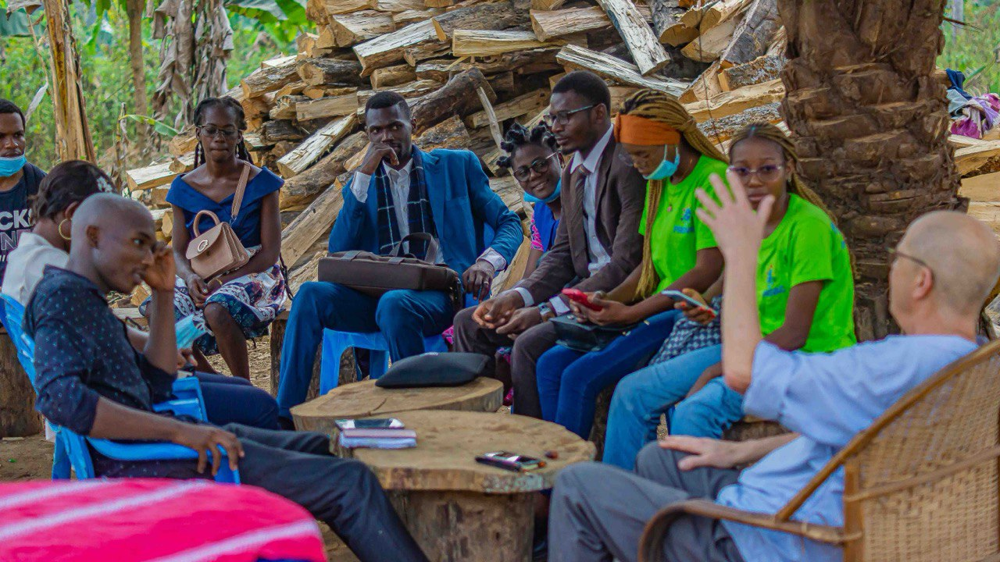

Du 14 février au 6 mars 2024, M. Michael PELKE, expert bénévole du Senior Experten Service (SES) en Allemagne, a effectué une mission au Cameroun dans le cadre d’un partenariat avec l’ONG PROVAC, basée à Mbankomo. Cette mission avait pour objectif principal de renforcer les capacités organisationnelles de PROVAC, d’accompagner la jeunesse camerounaise, et de soutenir la mise en œuvre de projets générateurs de revenus dans les domaines agro-pastoral et éducatif.
Dès son arrivée à Yaoundé, M. PELKE a été accueilli par l’équipe de PROVAC. Le séjour a débuté avec des séances de travail et une visite du site agricole de l’ONG à Angon I, un projet clé pour l'autonomisation économique locale. Au cours des semaines suivantes, l’expert a pris part à des descentes de terrain et des activités de sensibilisation communautaire dans plusieurs localités telles que Awaé, Nkol-Avolo, Akono, Ayéné, Kribi et Bipindi. Ces actions ont permis :
- L’animation d’ateliers et de séminaires dans les établissements scolaires, axés sur les valeurs civiques, l’entrepreneuriat, l’esprit critique et la participation citoyenne.
- La formation des membres et bénévoles de PROVAC à la rédaction de projets de développement et à la mobilisation de ressources.
- La mise en lumière de projets pilotes en agro-pastoral et en production de fascicules scolaires éducatifs.
La mission a également permis d’initier ou de renforcer des relations avec des institutions locales et internationales, notamment :
- Le Ministère de la Jeunesse et de l’Éducation Civique (MINJEC)
- La Commission Nationale pour la Promotion du Bilinguisme et du Multiculturalisme (CNPBM)
- Le Goethe-Institut Kamerun
- La Coopération allemande GIZ
Ces échanges ont favorisé la discussion autour de futurs partenariats, la valorisation de l’engagement citoyen et la promotion de l’éducation bilingue et interculturelle.
En parallèle des activités professionnelles, M. PELKE a participé à plusieurs moments culturels, incluant des cérémonies traditionnelles, des rencontres villageoises et des repas conviviaux. Ces instants ont renforcé les liens interculturels entre l’Allemagne et le Cameroun, tout en soulignant l’importance de l’humain dans les projets de coopération.
La mission s’est conclue par une évaluation des activités réalisées, suivie d’une cérémonie de clôture. Les résultats ont démontré l’apport significatif de cette collaboration dans le renforcement des compétences internes de PROVAC et la pérennisation de ses projets à fort impact social.